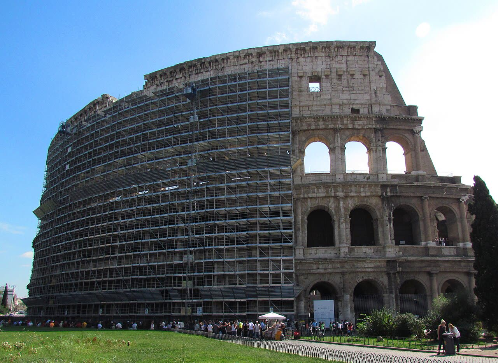

Colosseo, stop ai subappalti dopo la morte dell'operaio: l'annuncio è della Cgil
Vietare i subappalti è la risposta più facile da annunciare, non per forza la più utile. Prima di cambiare le regole per comunicato sindacale, il ministero pubblichi l'accordo e dica chi controllava la sicurezza di quel cantiere.
Redazione Contrappunto · aggiornato il 31.10.2026

.jpg){kind=link}
Nella notte tra il 22 e il 23 settembre un operaio di 22 anni, specializzato nei lavori in quota con le funi, è morto cadendo da circa 10 metri dentro il Colosseo, mentre montava il nuovo impianto di illuminazione. Lavorava per un'impresa in subappalto. Gli inquirenti hanno aperto un'inchiesta per omicidio colposo. Il Colosseo è gestito dal Parco archeologico del Colosseo, un istituto del ministero della Cultura. Il 31 ottobre i sindacati hanno annunciato nuove regole per i lavori nel sito.
Vedi di più: 4 parole spiegate, cosa si racconta
Cosa si raccontaANSA, il Giornale e il Fatto Quotidiano titolano che al Colosseo «cambiano le regole» e che il ministero «cambia il modello di lavoro»: niente più subappalti né «edilizia acrobatica». Tutti riprendono la nota della Cgil e della Fp Cgil di Roma e Lazio, che rivendica il risultato come frutto della mobilitazione dei lavoratori e chiede di estendere le stesse tutele a tutti i siti della cultura. [ANSA] [il Giornale] [Il Fatto Quotidiano]
- Subappalto
- Quando l'impresa che ha vinto un lavoro ne affida una parte a un'altra impresa. Nei lavori pubblici è permesso entro le regole del codice degli appalti; spesso serve per lavorazioni specialistiche.
- Edilizia acrobatica
- Lavori in quota fatti da operai appesi a funi, con tecniche da rocciatori, invece che da ponteggi o piattaforme.
- Parco archeologico del Colosseo
- L'istituto del ministero della Cultura che gestisce Colosseo, Foro Romano, Palatino e Domus Aurea.
- Fillea e Fp Cgil
- Categorie della Cgil: la Fillea rappresenta i lavoratori dell'edilizia, la Fp (Funzione pubblica) i dipendenti pubblici, tra cui quelli del ministero.
- Al Colosseo non si lavorerà più in quota appesi alle funi e non ci saranno più subappalti: lo annunciano la Cgil e la Fp Cgil di Roma e del Lazio, che parlano di accordi firmati con il ministero della Cultura.
- Il ministero e il Parco archeologico del Colosseo non hanno pubblicato una nota. I lavori riprendono il 3 novembre.
ANSA, il Giornale e il Fatto raccontano la stessa cosa con le stesse parole: sono quelle del sindacato. Del ministero c'è solo quanto riferisce la Cgil, nessun testo dell'accordo. Vietare i subappalti è la risposta più facile da annunciare, non per forza la più utile: lavorare appesi a una fune a dieci metri è un mestiere da specialisti, e per la Fillea Cgil l'impresa era esperta e in regola con la Cassa Edile. Le domande giuste restano aperte: perché si lavorava di notte, chi controllava la sicurezza in un monumento dello Stato, chi farà ora quei lavori. Le risposte le deve l'inchiesta, senza colpevoli prima del processo, e il ministero, pubblicando l'accordo. [2] [3] [4] [6] [1]
La verifica punto per punto6 passaggi, 6 fonti
Qui sotto ogni cosa scritta sopra, una per una, con le fonti. Confermato: lo dice un documento originale o più fonti lette. Plausibile: lo riportano fonti serie, ma non abbiamo letto l'originale. Discordante: le fonti danno numeri diversi, e diciamo quali. Ipotesi e Opinione sono il nostro ragionamento, separato dai fatti.
La morte e l'inchiesta
Il 23 settembre il Parco archeologico del Colosseo ha comunicato la morte, nella notte, di un operaio specializzato nei lavori in fune in quota, per un incidente sul lavoro dentro l'Anfiteatro Flavio, e ha chiuso il sito. Gli inquirenti hanno aperto un'inchiesta per omicidio colposo: nessuna responsabilità è accertata.
Il ministro e il sindacato
Il 25 settembre il ministro della Cultura Alessandro Giuli ha annunciato la riapertura del Colosseo e ha detto di voler attendere che la giustizia faccia il suo corso. Il segretario della Cgil Maurizio Landini ha chiesto di cancellare il subappalto: «Bisogna cancellare il subappalto, un sistema che uccide le persone».
L'annuncio del 31 ottobre
La Cgil e la Fp Cgil di Roma e Lazio annunciano che al Parco archeologico non ci saranno più «edilizia acrobatica» e subappalti, grazie ad accordi firmati con il ministero della Cultura: «possiamo finalmente dire che al Parco Archeologico cambia radicalmente modo di lavorare». I lavori riprendono il 3 novembre. I sindacati chiedono di estendere le tutele a tutti i siti della cultura e accusano l'amministrazione di aver voluto tenere il sito sempre aperto.
L'impresa in subappalto
Dopo un sopralluogo, il segretario della Fillea Cgil Diego Piccoli ha detto che non risultavano irregolarità nei versamenti alla Cassa Edile e che l'impresa aveva esperienza nell'edilizia acrobatica. Il subappalto riguardava una lavorazione specialistica. Il fatto in sé non prova irregolarità né responsabilità.
Tra le righe
Non sappiamo cosa dica davvero l'accordo: se vieta ogni subappalto nel Parco o solo quello dei lavori in quota, e chi farà quei lavori.
Ragionamento: Tutte le testate riportano la nota sindacale. Sul sito del Parco l'ultima comunicazione è del 30 ottobre e riguarda gli accessi; la pagina dei comunicati del ministero non risponde. Il sindacato parla di «accordi», al plurale, senza date né testo.
Il nostro punto
Uno Stato che funziona non cambia le regole per comunicato sindacale: le scrive, le pubblica e controlla i suoi cantieri. Vietare i subappalti suona bene, ma la sicurezza dipende da chi verifica il lavoro, non da quante imprese ci sono in fila.
Fonti6, tutte con il link
- Chiusura straordinaria: 23 settembre 2026 (Parco archeologico del Colosseo) · consultata il 31.10.2026
- Al Colosseo cambiano le regole, dopo la morte dell'operaio stop ai subappalti (ANSA) · consultata il 31.10.2026
- Colosseo, stop ai subappalti: come cambiano le regole dopo la morte dell'operaio (il Giornale) · consultata il 31.10.2026
- «Mai più edilizia acrobatica e subappalti». Dopo la morte dell'operaio, al Colosseo cambiano le regole (Il Fatto Quotidiano) · consultata il 31.10.2026
- Giuli annuncia la riapertura del Colosseo, sindacati contro i subappalti (ANSA) · consultata il 31.10.2026
- Operaio morto al Colosseo, i sindacati alzano il tiro: «Ora basta cordoglio, servono controlli stringenti sugli appalti» (7colli) · consultata il 31.10.2026
Testo preparato con strumenti di intelligenza artificiale e pubblicato senza revisione umana. Come lavoriamo